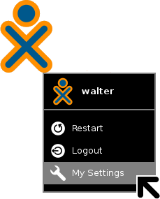

Exploring Sugar Settings
Like all computer systems, Sugar has a place where you can change settings. Whether you're adjusting the network, setting the time, or changing your nickname or colours; it's good to know where the settings are.

Hit Next to find out.